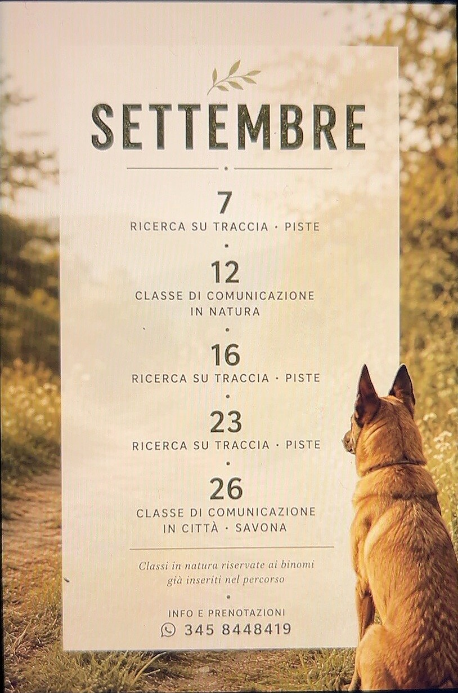

Aggiornamenti
L’agenda di Valentina.
Qui trovi le date pubblicate per classi di comunicazione, attività in natura, eventi e disponibilità. La locandina conserva sempre le sue proporzioni ed è possibile aprirla a piena dimensione.

Aggiornamenti
Nuove date in arrivo.
L’agenda è in fase di aggiornamento. Puoi scrivere direttamente a Valentina per conoscere attività e disponibilità.
Scrivi su WhatsApp ↗